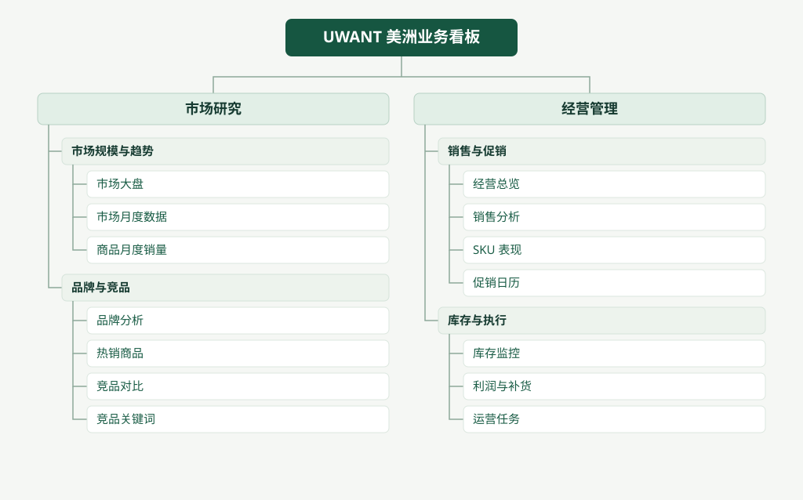

业务资料查找图
先确定国家、平台、品类和期间，再按业务问题找数据。

市场有空间吗？
- 看规模和变化
- 类目销售额、销量、历史走势
- 看品牌和价位
- 品牌份额、价格带、畅销型号
- 去哪里找
- 看板：市场总览、品牌分析
Amazon：卖家精灵或现有类目报告
美客多：大麦数据或已保存档案
竞品怎么选？
- 先找同类型产品
- 家用形态、品牌型号、当地版本
- 再比价格和配置
- 当地报价、图片、规格、评分
- 去哪里找
- 看板：商品研究、竞品对比、搜索词
核对：品牌官网、当地商品页面
无对应来源的字段继续补资料
我们在哪里？
- 看UWANT竞争位置
- 样本销量、销售额占比；品牌排名
- 找产品和渠道差距
- 同价位配置、SKU及出货结构
- 去哪里找
- 看板：市场总览、品牌分析、竞品对比
出货：载入实际出货台账
出货结构与市场样本份额分开看
经营表现怎样？
- 日常卖得怎样
- 历史实销、渠道、型号、月份
- 大促哪天表现好
- 活动日期、日订单、金额和状态
各平台报表的截数时间 - 去哪里找
- 看板：经营总览、经营分析、SKU表现
资料：订单导出、销量表、大促HTML
取消、未付款与已收款分开
库存与利润呢？
- 先看真正可用的货
- 可用量、已分配量、库存记录日期
- 再判断补货和利润
- 实际发货、在途、成本和各项费用
相关资料仍需补齐 - 去哪里找
- 看板：库存监控、利润与补货
资料：仓库报表、物流台账、财务费用
资料不齐时，暂不下毛利或在途结论
数据靠得住吗？
- 先核对统计范围
- 国家、币种、期间；实销还是估算
- 再查缺失和重复
- 历史缺月、商品组、型号和品类
同型号多链接不重复算 - 去哪里找
- 看板：数据管理 → 来源、核验、缺口
回查：原报告、平台页或内部台账
按缺口补资料，再核对一次